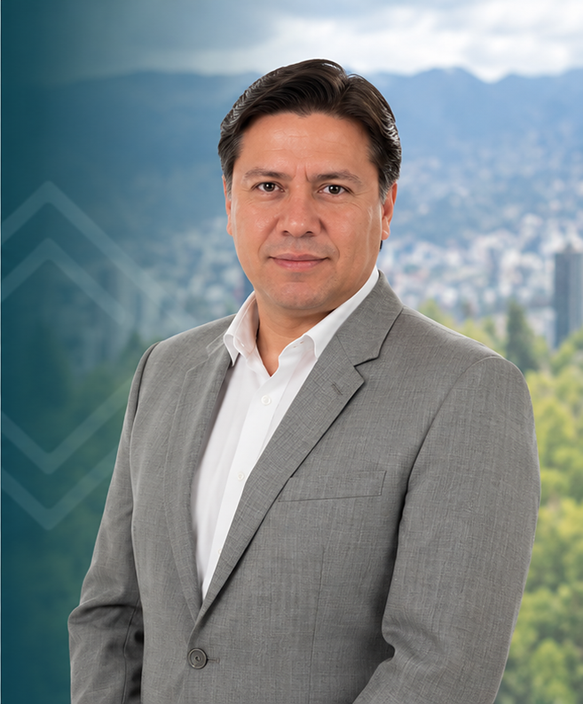

Uma necessidade concreta. Um caminho jurídico.
Você não precisa conhecer o nome do procedimento. Identifique o que deseja alcançar e explore o serviço adequado.
Constituir uma SAS.
Criar uma sociedade por ações simplificada para iniciar sua atividade, com requisitos e escopo próprios.
Organizar capital estrangeiro.
Uma companhia equatoriana com participantes do exterior e uma estrutura adequada ao projeto.
Organizar um grupo.
Propriedade, controle, administração e relações entre várias companhias.
Atualizar a companhia.
Estatutos, capital e outros atos societários, com o procedimento adequado a cada decisão.
Ter assessoria contínua.
Consultas, documentos e assuntos ordinários coordenados com uma equipe que conhece a operação.
Abrir uma sucursal.
A presença no Equador de uma companhia estrangeira, diferente de criar uma nova sociedade local.
A estrutura importa. Os acordos também.
Além do procedimento, analisamos como se relacionam as decisões societárias, os contratos e as responsabilidades de quem administra.
Regras para decidir.
SÓCIOS E GOVERNANÇA CORPORATIVA
- Estatutos, regras de administração e poderes de decisão.
- Acordos entre sócios: participação, decisões e regras de relacionamento.
- Assembleias, atas, procurações e nomeações conforme o ato necessário.
Acordos que reflitam o negócio.
CONTRATOS E OPERAÇÃO
- Revisão, elaboração e ajuste de contratos comerciais.
- Análise de obrigações, responsabilidades e cenários de saída.
- Apoio na negociação dos contratos incluídos na contratação.
Uma companhia que evolui.
MUDANÇAS E CONTINUIDADE
- Projetos de reorganização e mudanças societárias.
- Coordenação com a contabilidade e outras áreas envolvidas.
- Assessoria mensal para a operação ou um projeto pontual.
Antes do documento, entendemos a decisão.
Partimos do seu objetivo, da situação atual da companhia e das pessoas que devem participar da decisão.
Entender.
Atividade, participantes, estrutura atual e decisão que precisa tomar.
Revisar.
Documentos pertinentes, condições e possíveis conflitos de interesses.
Propor.
Alternativas e uma contratação com atuações, responsáveis, honorários e condições.
Acompanhar.
Procedimentos e documentos contratados, com acompanhamento dos próximos passos.
Escopo e condições
Cada atuação é delimitada em sua proposta. A assessoria jurídica não inclui automaticamente representação, contabilidade, DPD ou patrocínio judicial.
A proposta identifica a coordenação e a participação de cada área. Nem todos os profissionais participam de cada assunto.
EXPERIÊNCIA DA TEMPOLEGAL
Organizações acompanhadas pelo escritório em diferentes serviços. Cada contratação tem escopo próprio.
Epidata; INISEG; HireX · Grupo Conéctate; Cámara de Comercio Exterior; Grupo Tasker; UINMA · âmbito educativo vinculado ao INISEG; EduLink · estrutura vinculada à CCE; GestiaGlobal · estrutura vinculada à CCE.
As marcas e sociedades vinculadas são apresentadas em seu contexto. Não representam oito grupos independentes nem comprovam o mesmo serviço em todos os casos.
Conhecer a operação. Dar continuidade ao aconselhamento.
Depoimentos sobre diferentes serviços do escritório. As referências preservam o contexto de cada experiência; não significam que todos contrataram o mesmo serviço.
Eleazar Becerra
Diretor-geral e acionista principal · Cámara de Comercio Exterior
Quando decidimos desenvolver nossas atividades no Equador, precisávamos de muito mais do que constituir uma companhia. Era necessário organizar a estrutura societária, a representação local e os assuntos contábeis, tributários e de conformidade.
A TempoLegal tem nos acompanhado na estruturação de nossas empresas e nessas necessidades, incluindo a proteção de dados pessoais. Para nós, que coordenamos negócios em diferentes países, é uma vantagem ter uma equipe local que conhece nossa operação e à qual podemos recorrer diretamente.
Essa combinação de assessoria jurídica e apoio prático tem facilitado nosso trabalho no Equador. É o tipo de acompanhamento que eu recomendaria a outras empresas que desejam se estabelecer e operar no país.
Pablo Lucio Paredes
Economista · Diretor do Instituto de Economia da USFQ
Trabalhar com a Tempo Legal foi uma decisão positiva para minha empresa e minhas necessidades pessoais. Recebi uma assessoria clara e próxima; a equipe entendeu minhas necessidades, explicou os passos do processo e esteve disponível para esclarecer minhas dúvidas. Além do conhecimento jurídico, valorizei especialmente seu compromisso e a atenção personalizada durante todo o processo. Assim pudemos avançar com segurança e nos concentrar em nossas obrigações, sabendo que os aspectos jurídicos estavam em boas mãos. Sem dúvida, recomendaria a Tempo Legal. De fato, trabalho e continuarei trabalhando com eles
Depoimento pessoal; a afiliação não implica aval institucional.
Francisco Mosquera Aulestia
Presidente e acionista majoritário · Grupo Mosquera Aulestia (GMA)
Na GMA temos várias empresas e uma operação logística que não para. Precisamos de uma assessoria jurídica que entenda essa realidade e não se limite à teoria.
A TempoLegal nos acompanha há anos em questões trabalhistas, societárias, contratuais e de proteção de dados pessoais. Conhecem o funcionamento do grupo, por isso, quando surge um problema, podemos ir direto ao que importa.
O que mais valorizo é que nos ajudem a prevenir riscos e nos ofereçam alternativas claras para resolver situações concretas. Para um grupo empresarial como o nosso, contar com advogados que conhecem a operação e estão presentes quando precisamos faz a diferença.
Ana Cecilia Andrade
Gerente geral da FL Procesados del Ecuador S.A. · Acionista única da FLP Holding Ecuador · Grupo FLP
Na FLP há assuntos que exigem uma resposta imediata e outros que precisam de acompanhamento durante meses. Para mim, faz muita diferença contar com uma equipe que já conhece nossas empresas.
A TempoLegal nos apoia em questões trabalhistas, societárias e contratuais e, além disso, cuida da contabilidade da FLP Holding Ecuador. Poder coordenar a parte jurídica e contábil com a mesma equipe facilita muito nosso trabalho.
Não precisamos explicar do zero a história de cada companhia nem procurar a quem recorrer conforme o problema. Sabemos com quem falar e podemos dar continuidade aos assuntos pendentes. No dia a dia de uma empresa, isso vale muito.
Pessoas por trás de cada decisão.
Juan e Daniela coordenam os assuntos empresariais e societários. Os especialistas em contabilidade, finanças e privacidade participam quando a contratação exige.

Juan Alberto Gómez
Advogado · Sócio fundador
Direito empresarial e societário
Coordenação jurídica e estrutura empresarial.
Ver perfil ↗Daniela Barahona
Advogada · Mestre
Advogada sênior
Assuntos corporativos e trabalhistas da operação.
Ver perfil ↗
Emillie Donoso
Advogada · Mestre
Advogada sênior
Proteção de dados e conformidade regulatória.
Ver perfil ↗
Rolando Valencia
Engenheiro
Coordenador de Serviços Financeiros
Finanças e administração da operação.

Gabriel Calvopiña
Engenheiro · Mestre
Coordenador de Serviços Contábeis e Tributários
Contabilidade e obrigações tributárias.
Ver perfil ↗A proposta identifica a coordenação e a participação de cada área. Nem todos os profissionais participam de cada assunto.
Conheça nossa equipe ↗Coordenação de Quito
Podemos coordenar com participantes e equipes no exterior. A referência identifica a procedência de clientes do escritório em diferentes serviços, não escritórios internacionais.
México · Cidade do México; Guatemala · Cidade da Guatemala; Costa Rica · San José; Estados Unidos · Miami; Colômbia · Bogotá; Peru · Lima; Argentina · Buenos Aires; Espanha · Madri; Israel · Tel Aviv.
Procedência de clientes da TempoLegal em diferentes serviços. O atendimento é coordenado de Quito, Equador; esses locais não representam escritórios no exterior.
Ver conexões com o Equador ↗Respostas antes de contratar.
O escopo é definido para sua empresa e para a decisão que precisa tomar.
O que abrange o direito corporativo e societário?
Abrange a estrutura e as decisões jurídicas da empresa: constituição, governança corporativa, acordos entre sócios, assembleias, atas, procurações, nomeações, contratos e mudanças societárias. Podemos acompanhar uma atuação pontual ou a operação de forma recorrente. Antes da contratação, definimos quais atuações são necessárias e quais matérias exigem um serviço específico.
Devo constituir uma SAS ou escolher outra estrutura?
A SAS é uma alternativa, mas não se presume adequada a todos os projetos. Analisamos atividade, participantes, administração, investimento e necessidades operacionais para avaliar a estrutura. Para uma constituição padrão de SAS, consulte a página específica; investimento estrangeiro ou uma estrutura de grupo exige análise própria.
Podem ajudar se a empresa já estiver constituída?
Sim. Podemos analisar uma decisão concreta, atualizar documentos, acompanhar uma mudança societária ou definir assessoria recorrente. O ponto de partida é sua situação atual: estatutos, nomeações, acionistas, contratos e o que precisa resolver. Não é necessário criar outra companhia para organizar a existente.
Qual é a diferença entre uma reforma e uma mudança de acionistas?
Nem todas as mudanças seguem o mesmo procedimento. Uma reforma modifica o estatuto; uma transferência de ações, nomeação ou atualização pode ter regras e registros distintos. Analisamos o ato, o tipo de companhia, as decisões necessárias e os documentos antes de propor um caminho.
A assessoria mensal inclui todos os serviços do escritório?
Não automaticamente. A proposta recorrente identifica companhias, matérias, atuações, dedicação e condições. Projetos de estruturação, processos judiciais, defesa administrativa, contabilidade, DPD ou outros procedimentos podem ser contratados com escopo próprio. Não apresentamos uma mensalidade como cobertura ilimitada.
Revisam e elaboram contratos comerciais?
Podemos revisar, preparar ou ajustar contratos e acompanhar sua negociação quando acordado. Especificamos objetivo, partes, documentação, versões e etapas. Revisar um contrato não equivale a assumir todas as negociações ou qualquer conflito posterior; essas frentes devem ser delimitadas.
Podem ajudar a organizar várias companhias ou uma holding?
Sim. Primeiro entendemos a propriedade, a atividade de cada sociedade, as relações, a administração e os objetivos do grupo. Uma estrutura holding ou reorganização deve responder a uma necessidade real e considerar seus efeitos societários, contratuais e tributários. Por si só, não garante economia fiscal nem proteção patrimonial absoluta.
Preciso ser equatoriano ou ter visto para ser sócio ou acionista?
Não. Você não precisa ser equatoriano nem ter visto ou residência no Equador para ser sócio ou acionista de uma companhia equatoriana. Pode participar do exterior, cumprindo requisitos documentais e de registro. Residir, trabalhar ou exercer a representação legal são situações diferentes, analisadas separadamente.
Podem acompanhar uma empresa estrangeira que deseja operar no Equador?
Sim. Analisamos se precisa de uma sociedade equatoriana, uma sucursal da companhia estrangeira ou outra estrutura adequada. Conectamos essa decisão à representação, ao domicílio e ao suporte operacional contratados. Soft Landing tem uma página geral que explica esse percurso e leva a cada serviço específico.
Quais informações são necessárias para uma primeira conversa?
Uma descrição da atividade, da decisão que deseja tomar, da situação da companhia e de eventual data relevante. Não precisa anexar processos ou credenciais ao formulário inicial. Depois indicamos os documentos adequados e o canal para analisá-los.
Como são definidos os honorários e os prazos?
Dependem do ato ou serviço, da estrutura da empresa, dos documentos disponíveis, dos participantes, do volume de trabalho e de atuações perante terceiros. A proposta identifica entregáveis, honorários, despesas e condições de início. Não aplicamos o prazo ou preço de uma SAS padrão a todos os projetos corporativos.
A assessoria jurídica inclui contabilidade ou representação legal?
São serviços distintos que podem ser coordenados. A análise jurídica de uma obrigação não implica manter registros contábeis nem aceitar uma nomeação como representante. Se precisar dessas frentes, definimos o escopo, as responsabilidades e as condições de cada serviço.